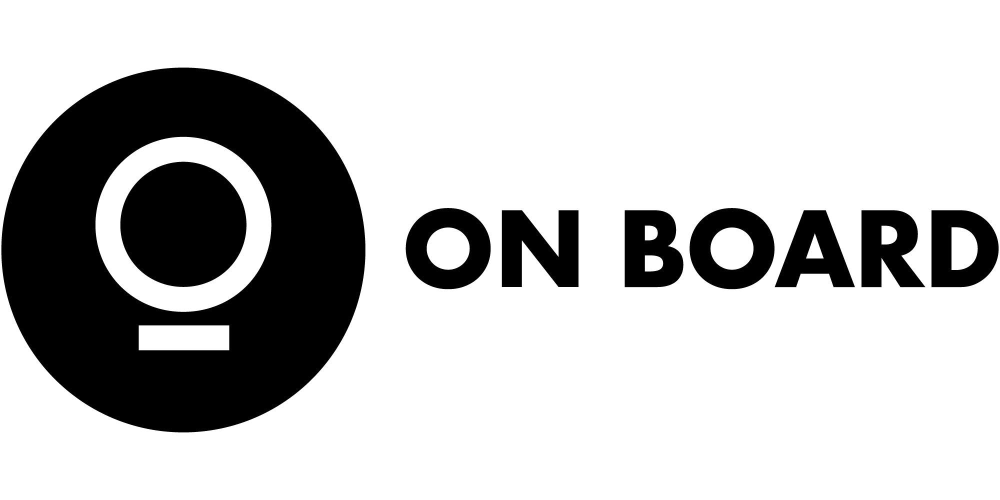

Cenová nabídkaINTEX – Scénář a akční plán spolupráce
Připravili jsme strukturovaný podklad k úvodnímu meetingu, který navazuje na cenovou nabídku. Cílem je společně projít hlavní oblasti spolupráce, potvrdit priority a zjistit, jaké podklady už má INTEX k dispozici. Body s oranžovou šipkou → označují témata, která potřebujeme na meetingu ověřit, zodpovědět nebo následně doplnit.
Krok 1 Vizuální identita Základ, na kterém stojí web i sociální sítě.
Logomanuál & loga
- Ověřit, zda existuje stávající logomanuál
- Ověřit, kdo má k dispozici zdrojové soubory loga (AI, EPS, SVG, PDF)
- Materiály nahrajte na sdílený disk

Fotky & vizuální podklady
- Fotky realizací ve vysokém rozlišení
- Stávající tiskové a digitální materiály (vizitky, bannery, hlavičkový papír, prezentace, roll-upy…)
- Materiály nahrajte na sdílený disk (nebo úschovna / jak je vám komfortní)
Názvosloví & architektura značky
INTEX dnes vystupuje pod několika aktivitami — nábytek a interiéry, sportovní aréna, chystaný hotel. Potřebujeme rozhodnout, jak to celé pojmenovat a jak to vizuálně propojit.
Existují tři základní přístupy ↓
- Holding / zastřešující značka — jedna mateřská značka INTEX, pod níž stojí aktivity jako divize. Př. INTEX nábytek, INTEX aréna, INTEX hotel — sdílené logo, sdílená identita, jeden silný název.
- Samostatné značky pod společným vlastníkem — každá aktivita má vlastní identitu, propojení je nenápadné. Vhodné pokud se aktivity cílí na velmi odlišné zákazníky a nechcete je míchat.
- Primární značka + vedlejší aktivity — INTEX nábytek je hlavní, aréna a hotel jsou vedlejší a komunikují se odděleně nebo vůbec. Nejčastější volba pro firmy, kde je jádro byznys jasné a zbytek je rozšíření.
- Je názvosloví dnes nějak ukotvené, nebo to teprve nastavujeme?
- Chcete, aby aréna a hotel komunikovaly pod INTEX, nebo samostatně?
- Jsou všechny aktivity pod jednou právní entitou, nebo jsou oddělené? (Ovlivní web, LinkedIn i celkové nastavení komunikace)
Doplňující otázky k meetingu ↓
- Když se řekne INTEX, co má být hlavní asociace?
- Je hlavní značkou INTEX nábytek, nebo širší INTEX jako skupina aktivit?
- Mají aréna a hotel pomáhat hlavní značce, nebo mají žít samostatně?
- Je pro vás důležitější jednotný brand, nebo jasné oddělení jednotlivých aktivit?
Vizuální inspirace
- Loga nebo vizuální identity, které se vám líbí (nemusí být z oboru — cokoliv, co vám přijde na mysl)
- Naopak co rozhodně nechcete (styl, barevnost, pocit)
- Příklady nahrajte na sdílený disk
Krok 2 Marketingová strategie Může běžet souběžně s krokem 1. Dá komunikaci logiku a směr.
Stávající situace & konkurence
- Existuje zpracovaná strategie?
- Co jste v marketingu dosud zkoušeli a co mělo podle Vás dobré výsledky? (výstavy, online reklama…)
- Jedou se aktuálně nějaké placené reklamy? nenašli jsme (Google Ads, Meta Ads, Sklik — kde, jaký budget, kdo spravuje)
- 2–3 přímí konkurenti v CZ / AT / HR — co dělají dobře, čím se liší
Cíle, zákazník & positioning
- Krátkodobé cíle (0–6 měs.) a střednědobé cíle (6–18 měs.) — zvlášť pro CZ / AT / HR
- USP — co INTEX umí nebo nabízí, co jiní ne? (dodací lhůty, customizace, reference, servis, know-how…) — USP = unikátní prodejní argument, důvod proč koupit právě od vás
- Cílový zákazník — kdo konkrétně rozhoduje? (architekt, projektant, developer, investor — jaké projekty, jaký segment)
- Cenové pozicionování — kde se INTEX vidí na trhu? (premium, střed trhu, dostupné)
- Obchodní cyklus — jak dlouho trvá od kontaktu po zakázku? Kdo na straně klienta podepisuje?
Doplňující otázky k meetingu ↓
- Co dnes obchodně funguje nejlépe? (doporučení, poptávky z webu, osobní kontakty, architekti, developeři…)
- Který typ zakázek chcete získávat častěji?
- Který typ zakázek naopak nechcete?
- Co je pro vás obchodně největší brzda?
Analytika & reklamní účty
Co potřebujeme: dodat přístupy na reklamy (pokud jsou).
- Google Analytics / GA4 (přístup správce, nebo přidání našeho účtu)
- Google Search Console (pokud existuje)
- Google Ads (pokud existuje — přístup do účtu)
- Meta Ads (reklamní účet v Meta Business Suite — odlišné od správy profilů)
- Sklik / Seznam Ads (pokud existuje)
Tone of voice & reference
Co potřebujeme: váš pohled na to, jak má značka komunikovat, a příklady, které se vám líbí (i mimo obor).
- Značky / weby, které vás zaujaly
- Čemu se naopak chcete vyhnout
Krok 3 Redesign webu Navazuje na vizuální identitu. Aplikuje nový brand na web.
Přístup do webu & správa
- Přístup do administrace webu (intexledec.cz) (abychom mohli posoudit technický stav)
- Kdo web dnes spravuje? (interně, externista, agentura)
- Přístup k doméně / hostingu řešíme až při samotném nasazení (není potřeba teď)
- Má web primárně podporovat ČR, nebo už rovnou zahraniční expanzi?
- Jak budeme prezentovat arénu a ostatní entity — chceme rozcestník a každá entita svou microsite?
Platforma & technologie
- Máte preferenci platformy, nebo necháváte výběr na nás? (WordPress, Webflow, vlastní rozhraní — doporučíme dle rozsahu a požadavků)
Top 5–10 prací k vyzdvihnutí
Potřebujeme vědět: které realizace jsou vaše nejsilnější vizitka. Budou dominantou nového webu.
- Top 5–10 projektů, které chcete prominentně vyzdvihnout (název, lokalita, krátký popis — nejlépe s co nejlepší fotodokumentací)
- Kategorie, do které projekt patří (kanceláře, hotely, resorty, soukromé interiéry…)
- Co na nich chcete ukázat? (materiál, rozsah, typ klienta, specifický detail práce)
Vizuální inspirace
Potřebujeme: weby, které se vám líbí — styl, struktura, atmosféra. Nemusí to být z vašeho odvětví.
- 2–3 weby, které vás zaujaly vizuálně nebo funkčně (může být cokoliv — architektura, luxury brand, portfolio, hotel…)
- Co na nich konkrétně oceňujete? (fotky, navigace, celkový pocit, způsob prezentace prací)
- Čemu se naopak chcete vyhnout?
- Screenshoty nebo příklady nahrajte na sdílený disk
Krok 4 LinkedIn ambassadoring Nejsilnější nástroj pro B2B akvizici. Začínáme s jedním ambasadorem + firemním profilem.
Ambasador: Vojtěch Smejkal

- Je k dispozici druhá osoba jako podpora? (např. obchodní ředitel, projektový manažer)
Přístupy & podklady
- Přístup k osobnímu profilu ambasadora (nutný pro publikování a navazování spojení)
- Firemní LinkedIn stránka INTEX nenašli jsme (domluvíme založení na meetingu)
- Profilová fotka ambasadora (profesionální, ideálně neutrální pozadí — nebo domluvíme focení)
- Připravíme LinkedIn banner (v rámci správy profilu)
- Cílové skupiny na LinkedIn — kdo konkrétně?
Krok 5 Mezinárodní expanze Až když jsou základy hotové. Rakousko & Chorvatsko.
Cílové regiony & kontakty
- Jaké části vašich služeb jsou relevantní pro zahraniční trh, nebo je relevantní celé portfolio? (pomáhá nastavit prioritizaci a obsah komunikace pro AT a HR)
- Máme konkrétní regiony, na které chceme cílit v AT a HR? (města, regiony — čím konkrétněji, tím přesnější LinkedIn targeting)
- Existující kontakty nebo partneři v zahraničí? (architekti, projektanti, developeři, klienti)
- Máte hotové projekty v AT nebo HR? (fotky, název projektu, klient pokud lze uvést — reference jsou v B2B klíčové)
Veletrhy & zahraniční akce
- Účastníte se nebo plánujete mezinárodní veletrhy? (Orgatec, Vienna Design Week, Denkmal… — obsah z akcí je dobrý podklad pro LinkedIn)
- Existují lokální oborové akce v AT / HR, kde chcete být vidět?
Jazykové podklady & překlady
- V jakých jazycích budeme komunikovat? (CZ, EN, DE — nebo jinak?)
- Existují materiály v cizích jazycích? (katalogy, prezentace, texty webu)
- Máte interní kapacitu pro překlady?
Krok 6 Marketing 360° Volitelný komplexní balíček. Obsah vyplyne ze strategie (krok 2).
Instagram & Facebook
Cíl: vybudovat fungující profily, nastavit obsah a postupně předat správu internímu člověku — s plným zázemím, šablonami a know-how.
Proces trvá přibližně 3–6 měsíců a probíhá ve fázích:
- Nastavení a sladění profilů s vizuální identitou
- Tvorba content plánu a šablon pro opakovaný obsah
- Zapracování interního člověka — průběžné sdílení know-how
- Postupné předání správy klientovi s plným servisem a manuálem
- Přístup do Meta Business Suite / správce stránky
- Kdo interně převezme správu? (alespoň rámcová představa — pomáhá nastavit tempo a hloubku zaškolení)
Newsletter
- Existuje databáze kontaktů? (velikost, jak byla sbírána)
- Byl newsletter v minulosti aktivní? (nástroj, frekvence, výsledky)
- Jaký nástroj používáte nebo preferujete? (Mailchimp, Ecomail, Brevo…)
Online reklama
Náš pohled: placená reklama má smysl — ale až na správném základě. Spouštět kampaně bez hotové vizuální identity a připraveného webu je neefektivní.
Správa webu
- Kdo dnes přidává nové realizace nebo aktualizuje obsah webu?
- Jak rychle potřebujete web reagovat na novinky? (nová zakázka, nová pozice, aktualita)
Vizuální & grafické práce
- Grafické práce dle potřeby (bannery, podklady pro reklamu, prezentace…)
- Tiskoviny (katalogy, letáky, roll-upy…)
- Vizitky
- Jaké grafické materiály aktuálně potřebujete nebo plánujete?
Video & podcast
- Video obsah — realizace, behind the scenes, produktové video, case studies
- Podcast (příklady: ON BOARD · ukázka klienta – Grinex)
Průřezově Organizace spolupráce Aby věci běžely hladce i na dálku.
Kontaktní osoba
Co potřebujeme: jednu/dvě kontaktní osoby na vaší straně.
- Kdo je hlavní kontakt pro běžnou komunikaci?
Sdílený disk
- Sdílený Google Drive pro předávání podkladů (fotky, loga, dokumenty, přístupy)
- Ad hoc komunikace přes WhatsApp (rychlé otázky, urgentní věci)
- Formální komunikace, zadávání podkladů a schvalování obsahu e-mailem
- Kdo bude příjemcem e-mailů ze strany INTEX?
Kontrolní den
- Pravidelný kontrolní den 1× měsíčně (výsledky, připravený obsah, plán na další období)
- Online nebo osobně — dle preference
K dodání Shrnutí k dodání Vše, co můžete připravit nebo poslat ještě před meetingem.
Čím víc toho máme předem, tím víc meetingem posuneme. Oranžovou šipkou → jsou v celém dokumentu označeny body, kde od vás něco potřebujeme dodat.
- Logomanuál a zdrojové soubory loga (AI, EPS, SVG — ne JPG z webu)
- Fotky realizací ve vysokém rozlišení
- Stávající tiskové a digitální materiály (vizitky, bannery, prezentace, roll-upy…)
- Profilová fotka Vojtěcha Smejkala
- Přístupy: web admin, Google Analytics, Meta Business Suite (posílejte přes sdílený password manager nebo zabezpečený dokument)
- Top 5 realizací, které chcete na webu vyzdvihnout
- Vizuální inspirace — loga nebo identity, které se vám líbí
- Existující prezentace nebo texty o firmě